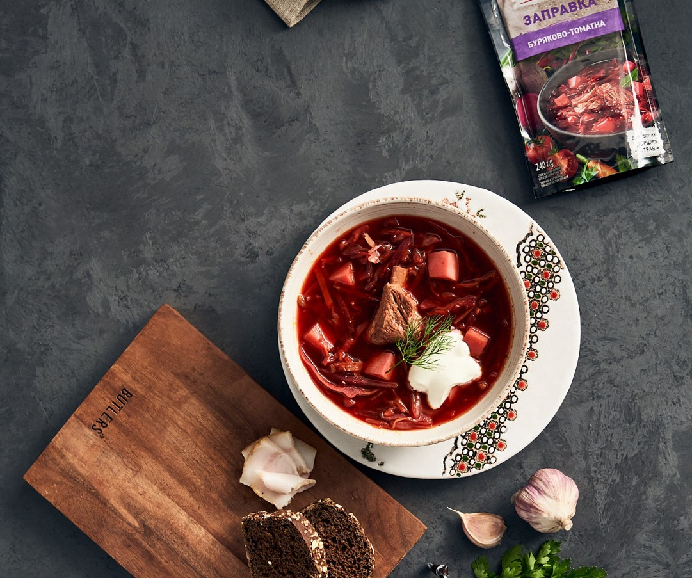
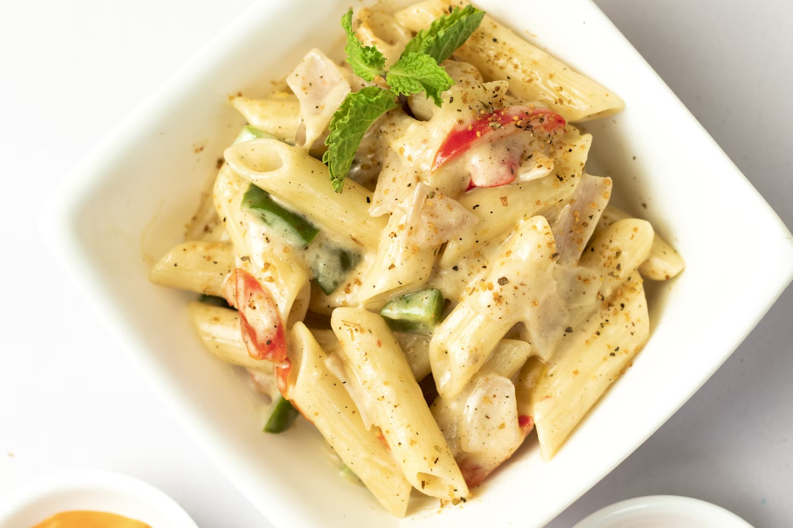
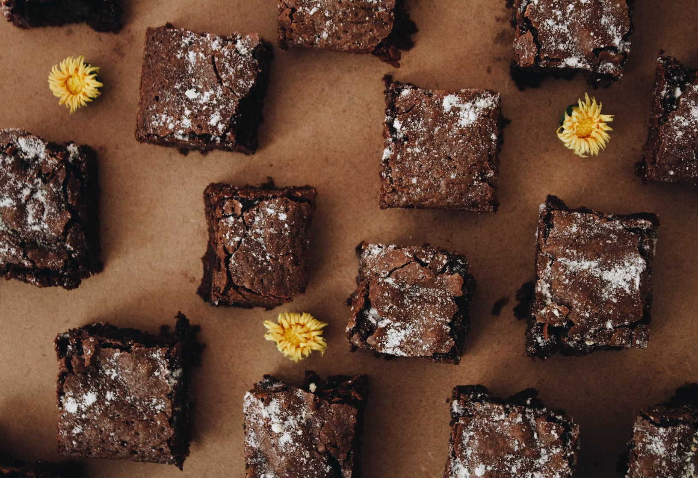

Наши рецепты

Борщ
Классический украинский борщ с мясом и свеклой - сытное и ароматное первое блюдо.
Ингредиенты:
- 500 г говядины
- 2 свеклы
- 2 моркови
- 3 картофелины
- 1 луковица
- 1/4 капусты
- 2 ст.л. томатной пасты
- Соль, перец, лавровый лист
- Сметана и зелень для подачи
Приготовление:
- Мясо залить водой и варить 1.5 часа.
- Овощи нарезать, свеклу и морковь обжарить с луком.
- Добавить томатную пасту и тушить 5 минут.
- В бульон добавить картофель, через 10 минут - капусту.
- Через 10 минут добавить зажарку, соль, перец, лавровый лист.
- Варить еще 10 минут, дать настояться.

Паста с курицей
Нежная паста с куриной грудкой в сливочном соусе - идеальный ужин за 30 минут.
Ингредиенты:
- 300 г пасты (пенне или феттучини)
- 300 г куриного филе
- 200 мл сливок 20%
- 1 луковица
- 2 зубчика чеснока
- 50 г пармезана
- 2 ст.л. оливкового масла
- Соль, перец, итальянские травы
Приготовление:
- Пасту отварить в подсоленной воде до al dente.
- Курицу нарезать кубиками, обжарить до золотистой корочки.
- Добавить мелко нарезанный лук и чеснок, обжарить 2 минуты.
- Влить сливки, добавить специи, тушить 5 минут.
- Смешать пасту с соусом, посыпать тертым пармезаном.

Шоколадный торт
Нежнейший шоколадный торт с насыщенным вкусом - идеальный десерт для особых случаев.
Ингредиенты:
- 200 г темного шоколада
- 200 г сливочного масла
- 4 яйца
- 150 г сахара
- 100 г муки
- 1 ч.л. разрыхлителя
- Щепотка соли
- Какао-порошок для украшения
Приготовление:
- Шоколад и масло растопить на водяной бане, остудить.
- Яйца взбить с сахаром до пышной массы.
- Аккуратно смешать шоколадную массу с яичной.
- Добавить просеянную муку с разрыхлителем, перемешать.
- Вылить тесто в форму, выпекать 25-30 минут при 180°C.
- Остудить, посыпать какао-порошком.